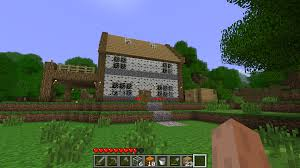
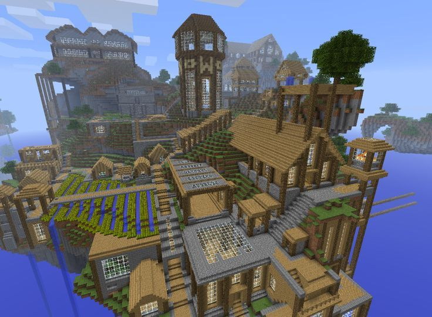
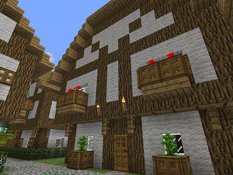

Creado en el año 2009 por Markus Persson o mejor conosido como Notch, Minecraft es un juego estilo sandbox de mundo abierto el cual se centra en la supervivencia en una epoca medieval de fantasia. pese a que este esta centrado en la supervivencia lo que destaco de las mecanicas del juego fue la imensa libertad creatiba que posees en el juego. por esto Minecraft hoy en día cuando hablamos de creatividad en los videojuegos Minecraft aparece como una de las primeras opciones, y esta precencia de la creatividad se veia desde sus primeras verciones en las cuales pese a tener minimos bloques la comunidad se las arreglaban para crear esturas gigantes como castillos y de más cosas aqui unos ejemplos.



Como puden ver desde el inicio del juego lo que reinaba era la cratividad, pero esta estaba ciertamente limitada asique con el objetivo de mejorar tanto la experiensa survaival y de dar más heramientas para que los jugadores puedan explotar su creatividad el creador Noch(Markus Persson) haria varias actualisaciones las cuales cada una estaria enfoncada en uno o en barios aspectos del juego como la exploracion, la constrccion, la decoracion, el combante entreotros. a continuacion voy a listar las actulizaciones y sus inplementaciones
estas son de las verciones más basicas del juego y sentaba las bases de la mecanica de construcción, tambien en algunas estas verciones aparecieron las primeras entidadas(criaturas) las cuales eran unos npc los cuales estaban echas con el mismo modelo y tenian las mismas animaciones del jugador. y en la vercion Classic fue inplementado un imentario basico. aqui unos videos de demostracion:
estas verciones trajeron el modo supervivensia, se introdujeron más entidades, tambien se mejoro el inventario, se introdujeron los primeros minerales, se introdusio la mecanica del mesa de crafteo que permitio a los jugarores crear herramientas y armaduras, ahora la generacion del mundo era infinita y presedural esto quiere decir que mediante algoritmos generada el terreno de forma aleatoria, esto hacia que no todos los mundos sean iguales.
en estas verciones se agregaron nuevos biomas, una nueva dimencion llamada nether la cual es una reprecentacion de el infierno, al modo supervivencia se le agrego la nesecidad de comer junto a la mecanica de correr, la inplementacion de me mecaica de dormir se implementaron más bloques de contruccion, de decoracion y tambien bloques funcionales como los cofres los cuales eran una manera de guardar tus recursos, se agrego un nuevo mineral llamado redstone el cual permitia crear mecanismos simples.
Estas verciones eran lansamientos anuales y eran verciones completas las cuales mejoraban el juego e inplementaban cosas nuevas como otra nueva dimencion llamada End la inplementacion de jefes a derrotar, inplementacion de estructuras las cuales aparecian en sus biomas spesificos y en sus dimenciones spesificas, nuevas criaturas las cuales cumplian nuevas funciones un ejemplo son los aldeanos los cuales cumplen el rol de ser una raza de humanos los cuales son comerciantes, otras criaturas que cumplian una funcion eran los caballos los cuales eran la mejor forma de moverse por tierra por su velosidad, se agregaron mas mejoras a la redstone con más bloques los cuales permiten crear sistemas mas complejos de mecanismos, se implementaron nuevos biomas y otros se como la jungla y la savana, y a los que ya estaban precentes se mejoraron, con esto tambien llegaron nuevos tipos de arboles y de madera. Esto nos lleva a que se inplementaron más bloques decorativos, se mejoro la mecanica de combate inplementado un tiempo de espera despues de cada ataque implemntando un escudo, otro complemento fueron los encantamientos unas especies de mejoras las cuales mejoran, le dan efectos a las herramientas y armaduras del juego, tambien se implementaron pociones las cuales daban efectos los cuales benefisiaban al jugador pero tambien pueden perjudicarlo.
estas veciones inplementaron más criaturas nuevas, minerales, se inplementaron más bloques decorativos y funcionsles, se mejoraro los biomas y a la dimencion del nether agregandole biomas nuevos, estructuras nuevas y rediceñando las criaturas existentes, agegandoles bariantes y tambien agregando nuevas criaturas, se mejoro el sistema de tradeo(comercio) de los aldeanos, se aumento la altura maxima del mundo, esto llevo a la mejora de la generacin de montañas esto haciendo que sean más altas, tambien mejoro la generacion de las cuevas haciendolas mas amplias, grandes y profundas, tambien se inplemento una mecanica de arqueologia lo trajo herramientas nuevas, se intodugeron nuevas etructuras, un nuevo jefe llamado warden el cual este precente en una de estas estucturas